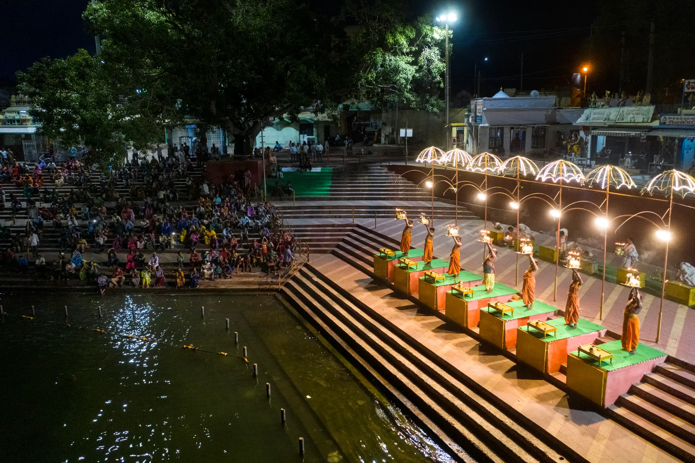
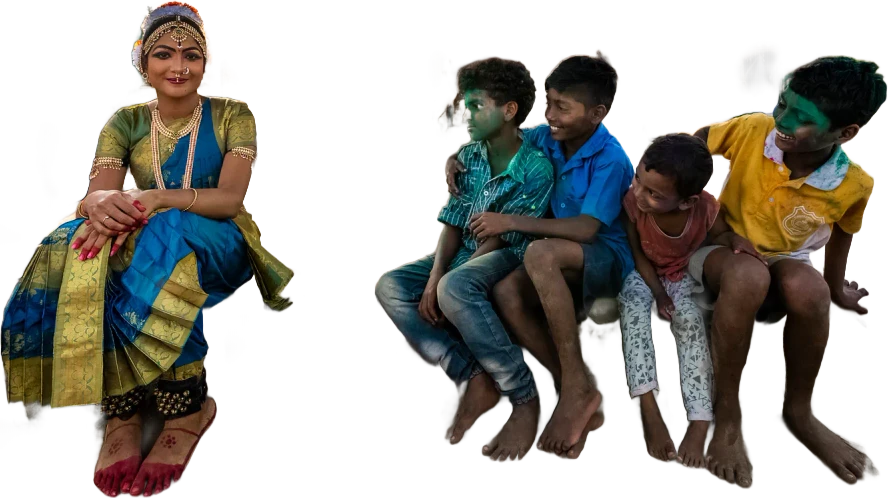
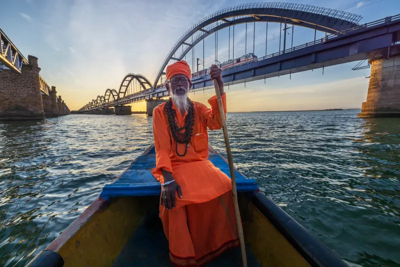
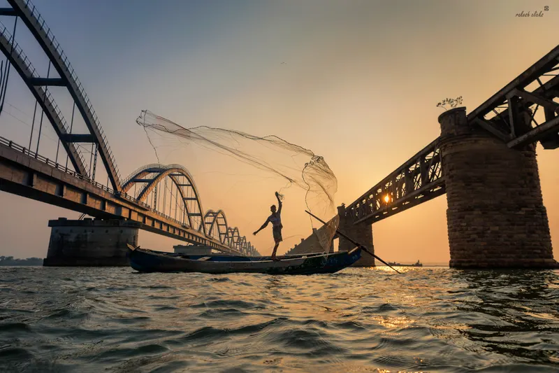
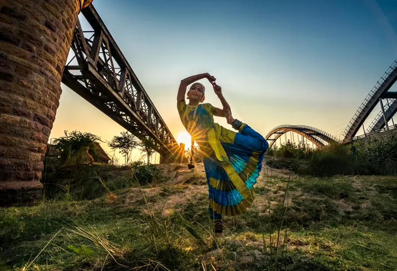
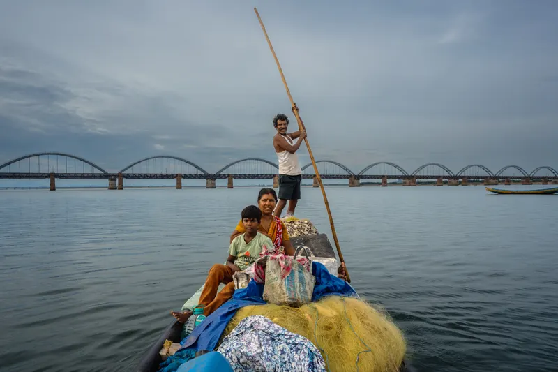
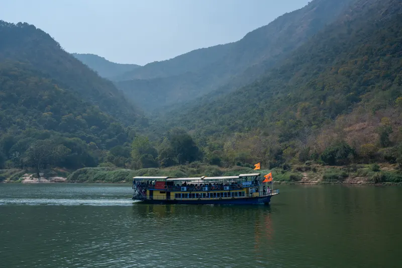
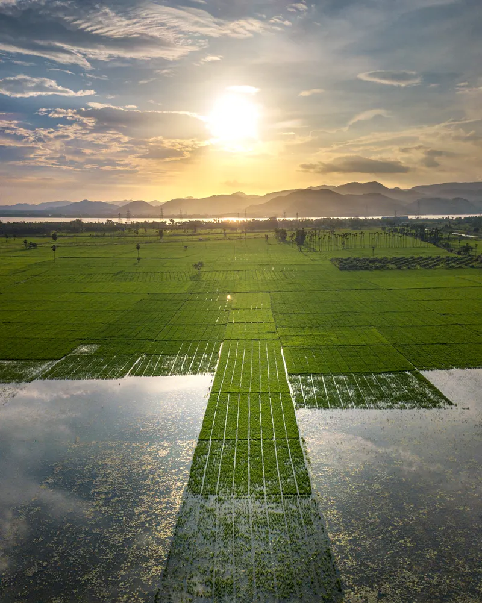

EASTతూర్పు గోదావరి GODAVARI
One river, and everything it grew.
Seven places you will not forget.
scroll
One river, and everything it grew.
Seven places you will not forget.
scroll

పాపికొండలు

రాజమహేంద్రవరం

ధవళేశ్వరం

కడియం

కోనసీమ

గౌతమీ ఘాట్
అంతర్వేది
Where everything is
tap a place to travel
Between the places






Three perfect days
DAY 01

06:00board the launch at Rajahmundry ghatALL DAYthe Papikondalu gorge, lunch on boardSUNSETback under the three bridges
DAY 02

DAWNKadiyam nurseries in bloomNOONbarrage & Cotton MuseumDUSKharathi at Gowthami Ghat — sit low
DAY 03

MORNINGdrift Konaseema’s coconut canalsAFTERNOONAntarvedi, where she meets the seaEVENINGyou won’t want to leave
Fly into Rajahmundry (RJA) or rail to Rajamahendravaram Junction — cross the river on the road-rail bridge for the best first look.
October–February is river weather. July–September the monsoon makes her loud and the fields their greenest.
Riverside hotels in Rajahmundry, or Konaseema’s backwater resorts at Dindi if you want palms outside the window.